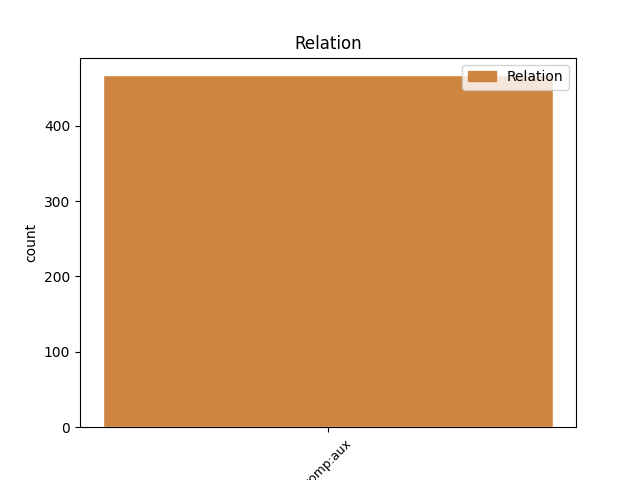
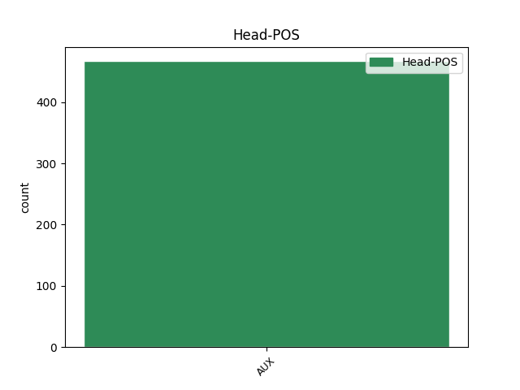
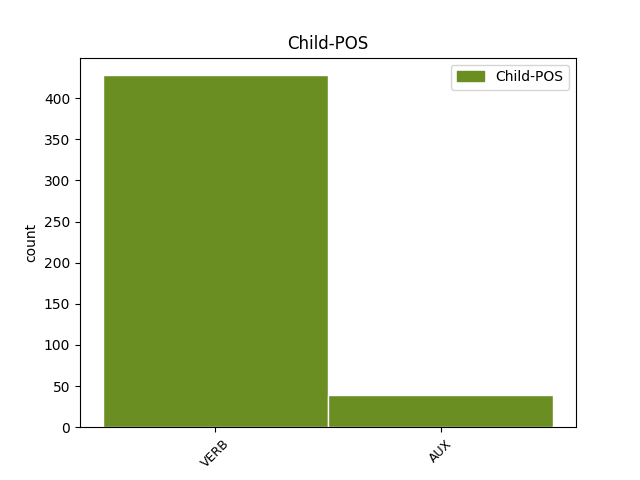

Distribution of features within this leaf



Agreement Rules sorted by frequency.
- When the dependent token is the complement for auxiliary(comp:aux) of the head token,
1 Cîți _ _ _ _ 0 _ _ _
2 din _ _ _ _ 0 _ _ _
3 cei _ _ _ _ 0 _ _ _
4 ce _ _ _ _ 0 _ _ _
5 au _ _ _ _ 0 _ _ _
6 pricină _ _ _ _ 0 _ _ _
7 de _ _ _ _ 0 _ _ _
8 judecată _ _ _ _ 0 _ _ _
9 , _ _ _ _ 0 _ _ _
10 chemîndu- _ _ _ _ 0 _ _ _
11 să _ _ _ _ 0 _ _ _
12 în _ _ _ _ 0 _ _ _
13 doao _ _ _ _ 0 _ _ _
14 rănduri _ _ _ _ 0 _ _ _
15 de _ _ _ _ 0 _ _ _
16 cătră _ _ _ _ 0 _ _ _
17 judecători _ _ _ _ 0 _ _ _
18 , _ _ _ _ 0 _ _ _
19 nu _ _ _ _ 0 _ _ _
20 vor _ _ _ _ 0 _ _ _
21 veni _ _ _ _ 0 _ _ _
22 , _ _ _ _ 0 _ _ _
23 și _ _ _ _ 0 _ _ _
24 să _ _ _ _ 0 _ _ _
25 vor vrea AUX Vaip3p Mood=Ind|Number=Plur|Person=3|Tense=Pres 0 _ _ _
26 osîndi osândi VERB Vmip3s Mood=Ind|Number=Sing|Person=3|Tense=Pres|VerbForm=Fin 25 comp:aux _ ref=PART_V_CAP_4.4|SpaceAfter=No
27 , _ _ _ _ 0 _ _ _
28 aceia _ _ _ _ 0 _ _ _
29 nu _ _ _ _ 0 _ _ _
30 pot _ _ _ _ 0 _ _ _
31 porni _ _ _ _ 0 _ _ _
32 Apellație _ _ _ _ 0 _ _ _
33 . _ _ _ _ 0 _ _ _
Disagree Examples:
1 În _ _ _ _ 0 _ _ _
2 zilele _ _ _ _ 0 _ _ _
3 acealea _ _ _ _ 0 _ _ _
4 , _ _ _ _ 0 _ _ _
5 cînd _ _ _ _ 0 _ _ _
6 ară _ _ _ _ 0 _ _ _
7 a _ _ _ _ 0 _ _ _
8 fi _ _ _ _ 0 _ _ _
9 iară _ _ _ _ 0 _ _ _
10 mulțime _ _ _ _ 0 _ _ _
11 multă _ _ _ _ 0 _ _ _
12 cu _ _ _ _ 0 _ _ _
13 El _ _ _ _ 0 _ _ _
14 și _ _ _ _ 0 _ _ _
15 n- _ _ _ _ 0 _ _ _
16 are avea AUX Vaip3s Mood=Ind|Number=Sing|Person=3|Tense=Pres 0 _ _ _
17 avea avea VERB Vmii3s Mood=Ind|Number=Sing|Person=3|Tense=Imp|VerbForm=Fin 16 comp:aux _ ref=MARC8.1
18 ce _ _ _ _ 0 _ _ _
19 mînca _ _ _ _ 0 _ _ _
20 , _ _ _ _ 0 _ _ _
21 chemă _ _ _ _ 0 _ _ _
22 Iisus _ _ _ _ 0 _ _ _
23 pre _ _ _ _ 0 _ _ _
24 ucenicii _ _ _ _ 0 _ _ _
25 lui _ _ _ _ 0 _ _ _
26 , _ _ _ _ 0 _ _ _
27 zise _ _ _ _ 0 _ _ _
28 lor _ _ _ _ 0 _ _ _
29 : _ _ _ _ 0 _ _ _
1 Și _ _ _ _ 0 _ _ _
2 răspunsără _ _ _ _ 0 _ _ _
3 Lui _ _ _ _ 0 _ _ _
4 ucenicii _ _ _ _ 0 _ _ _
5 lui _ _ _ _ 0 _ _ _
6 : _ _ _ _ 0 _ _ _
7 De _ _ _ _ 0 _ _ _
8 unde _ _ _ _ 0 _ _ _
9 pre _ _ _ _ 0 _ _ _
10 aceștea _ _ _ _ 0 _ _ _
11 va vrea AUX Vaip3s Mood=Ind|Number=Sing|Person=3|Tense=Pres 0 _ _ _
12 putea putea VERB Vmii3s Mood=Ind|Number=Sing|Person=3|Tense=Imp|VerbForm=Fin 11 comp:aux _ ref=MARC8.4
13 cineva _ _ _ _ 0 _ _ _
14 să _ _ _ _ 0 _ _ _
15 -i _ _ _ _ 0 _ _ _
16 sature _ _ _ _ 0 _ _ _
17 de _ _ _ _ 0 _ _ _
18 pîine _ _ _ _ 0 _ _ _
19 în _ _ _ _ 0 _ _ _
20 pustie _ _ _ _ 0 _ _ _
21 ? _ _ _ _ 0 _ _ _
1 Iară _ _ _ _ 0 _ _ _
2 cînd _ _ _ _ 0 _ _ _
3 veți _ _ _ _ 0 _ _ _
4 vedea _ _ _ _ 0 _ _ _
5 grozăviia _ _ _ _ 0 _ _ _
6 pustiiriei _ _ _ _ 0 _ _ _
7 , _ _ _ _ 0 _ _ _
8 carea _ _ _ _ 0 _ _ _
9 e _ _ _ _ 0 _ _ _
10 zisă _ _ _ _ 0 _ _ _
11 de _ _ _ _ 0 _ _ _
12 Daniil _ _ _ _ 0 _ _ _
13 prorocul _ _ _ _ 0 _ _ _
14 , _ _ _ _ 0 _ _ _
15 stînd _ _ _ _ 0 _ _ _
16 , _ _ _ _ 0 _ _ _
17 unde _ _ _ _ 0 _ _ _
18 nu _ _ _ _ 0 _ _ _
19 să _ _ _ _ 0 _ _ _
20 cade _ _ _ _ 0 _ _ _
21 , _ _ _ _ 0 _ _ _
22 ( _ _ _ _ 0 _ _ _
23 cela _ _ _ _ 0 _ _ _
24 ce _ _ _ _ 0 _ _ _
25 va vrea AUX Vaip3s Mood=Ind|Number=Sing|Person=3|Tense=Pres 0 _ _ _
26 ceti ceti VERB Vmis3s Mood=Ind|Number=Sing|Person=3|Tense=Past|VerbForm=Fin 25 comp:aux _ ref=MARC13.14
27 să _ _ _ _ 0 _ _ _
28 înțeleagă _ _ _ _ 0 _ _ _
29 ) _ _ _ _ 0 _ _ _
30 atuncea _ _ _ _ 0 _ _ _
31 carii _ _ _ _ 0 _ _ _
32 vor _ _ _ _ 0 _ _ _
33 fi _ _ _ _ 0 _ _ _
34 în _ _ _ _ 0 _ _ _
35 Iudea _ _ _ _ 0 _ _ _
36 să _ _ _ _ 0 _ _ _
37 fugă _ _ _ _ 0 _ _ _
38 la _ _ _ _ 0 _ _ _
39 munți _ _ _ _ 0 _ _ _
40 . _ _ _ _ 0 _ _ _
1 Și _ _ _ _ 0 _ _ _
2 iată _ _ _ _ 0 _ _ _
3 vei _ _ _ _ 0 _ _ _
4 fi _ _ _ _ 0 _ _ _
5 mut _ _ _ _ 0 _ _ _
6 , _ _ _ _ 0 _ _ _
7 și _ _ _ _ 0 _ _ _
8 nu _ _ _ _ 0 _ _ _
9 vei vrea AUX Vaip2s Mood=Ind|Number=Sing|Person=2|Tense=Pres 0 _ _ _
10 putea putea AUX Vaii3s Mood=Ind|Number=Sing|Person=3|Tense=Imp 9 comp:aux _ ref=LUCA1.20
11 grăi _ _ _ _ 0 _ _ _
12 , _ _ _ _ 0 _ _ _
13 pînă _ _ _ _ 0 _ _ _
14 în _ _ _ _ 0 _ _ _
15 zua _ _ _ _ 0 _ _ _
16 ce _ _ _ _ 0 _ _ _
17 vor _ _ _ _ 0 _ _ _
18 fi _ _ _ _ 0 _ _ _
19 aceastea _ _ _ _ 0 _ _ _
20 , _ _ _ _ 0 _ _ _
21 pentru _ _ _ _ 0 _ _ _
22 ce _ _ _ _ 0 _ _ _
23 nu _ _ _ _ 0 _ _ _
24 crezuși _ _ _ _ 0 _ _ _
25 cuvintele _ _ _ _ 0 _ _ _
26 meale _ _ _ _ 0 _ _ _
27 , _ _ _ _ 0 _ _ _
28 carele _ _ _ _ 0 _ _ _
29 să _ _ _ _ 0 _ _ _
30 vor _ _ _ _ 0 _ _ _
31 împlea _ _ _ _ 0 _ _ _
32 la _ _ _ _ 0 _ _ _
33 vreamea _ _ _ _ 0 _ _ _
34 lor _ _ _ _ 0 _ _ _
35 . _ _ _ _ 0 _ _ _
1 Derept _ _ _ _ 0 _ _ _
2 aceaia _ _ _ _ 0 _ _ _
3 și _ _ _ _ 0 _ _ _
4 Ce _ _ _ _ 0 _ _ _
5 să _ _ _ _ 0 _ _ _
6 va _ _ _ _ 0 _ _ _
7 naște _ _ _ _ 0 _ _ _
8 den _ _ _ _ 0 _ _ _
9 Tine _ _ _ _ 0 _ _ _
10 , _ _ _ _ 0 _ _ _
11 Sfîntul _ _ _ _ 0 _ _ _
12 , _ _ _ _ 0 _ _ _
13 chema chema VERB Vmii3s Mood=Ind|Number=Sing|Person=3|Tense=Imp|VerbForm=Fin 15 comp:aux _ ref=LUCA1.35|SpaceAfter=No
14 -Să _ _ _ _ 0 _ _ _
15 -va vrea AUX Vaip3s Mood=Ind|Number=Sing|Person=3|Tense=Pres 0 _ _ _
16 Fiiul _ _ _ _ 0 _ _ _
17 lui _ _ _ _ 0 _ _ _
18 Dumnezău _ _ _ _ 0 _ _ _
19 . _ _ _ _ 0 _ _ _